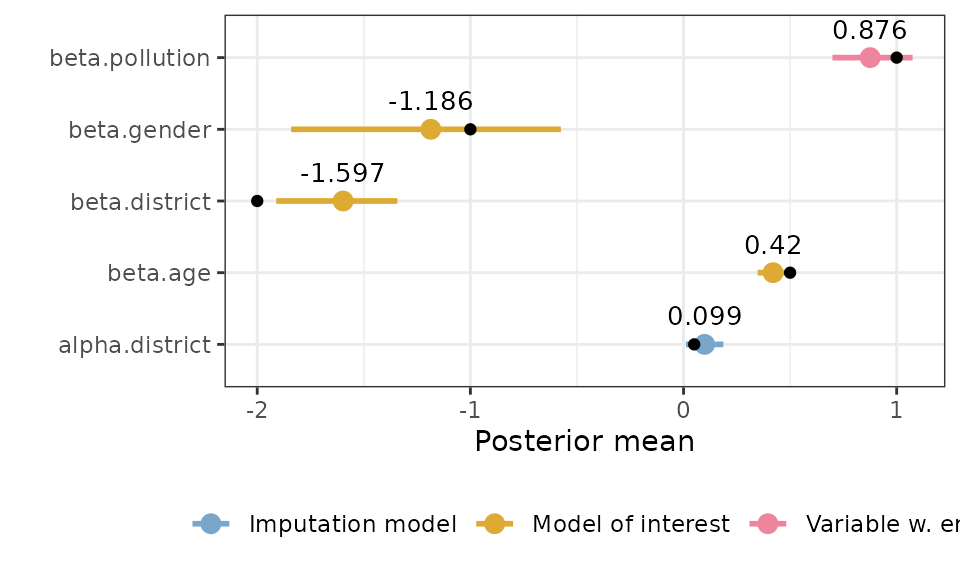

Simulated examples
simulated_examples.RmdThis vignette shows how to fit measurement error and imputation
models using the inlami package for a few different simple
simulated data sets. Note that although the data sets describe realistic
situations, they are all completely fictitious, and created purely to
illustrate how to fit models in different situations.
Simple example
This is a simple simulation with Berkson and classical error as well as missing data, to check that the package works as expected in that scenario.
| Error types | Likelihood | Response | Covariate with error | Other covariate(s) |
|---|---|---|---|---|
| Berkson, classical, missing values | Gaussian | \(y\) | \(x\) | \(z\) |
Generating the data
set.seed(2024)
n <- 1000
# Covariate without error:
z <- rnorm(n, mean = 0, sd = 1)
# Berkson error:
u_b <- rnorm(n, sd = 1)
alpha.0 <- 1; alpha.z <- 2
r <- rnorm(n, mean = alpha.0 + alpha.z*z, sd = 1)
x <- r + u_b # Turn off Berkson by commenting out "+ u_b"
# Response:
beta.0 <- 1; beta.x <- 2; beta.z <- 2
y <- beta.0 + beta.x*x + beta.z*z + rnorm(n)
# Classical error:
u_c <- rnorm(n, sd = 1)
x_obs <- r + u_c
# Missingness:
m_pred <- -1.5 - 0.5*z # This gives a mean probability of missing of ca 0.2.
m_prob <- exp(m_pred)/(1 + exp(m_pred))
m_index <- as.logical(rbinom(n, 1, prob = m_prob)) # MAR
# m_index <- sample(1:n, 0.2*n, replace = FALSE) # MCAR
x_obs[m_index] <- NA
simulated_data <- data.frame(y = y, x = x_obs, z = z)Fitting the model
# Predictors for the sub-models
simple_moi <- y ~ x + z
simple_imp <- x ~ z
# Prior for beta.x
prior.beta <- c(0, 1/1000) # N(0, 10^3)
# Priors for y, measurement error and true x-value precision
prior.prec.y <- c(10, 9) # Gamma(0.5, 0.5)
prior.prec.u_b <- c(10, 9) # Gamma(0.5, 0.5)
prior.prec.u_c <- c(10, 9) # Gamma(0.5, 0.5)
prior.prec.r <- c(0.5, 0.5) # Gamma(0.5, 0.5)
# Initial values
initial.prec.y <- 1
initial.prec.u_b <- 1
initial.prec.u_c <- 1
initial.prec.r <- 1
# Fit the model
simple_model <- fit_inlami(data = simulated_data,
formula_moi = simple_moi,
formula_imp = simple_imp,
family_moi = "gaussian",
error_type = c("berkson", "classical"),
prior.prec.y = prior.prec.y,
prior.prec.u_b = prior.prec.u_b,
prior.prec.u_c = prior.prec.u_c,
prior.prec.r = prior.prec.r,
initial.prec.y = initial.prec.y,
initial.prec.u_b = initial.prec.u_b,
initial.prec.u_c = initial.prec.u_c,
initial.prec.r = initial.prec.r)
summary(simple_model)
#> Formula for model of interest:
#> y ~ x + z
#>
#> Formula for imputation model:
#> x ~ z
#>
#> Error types:
#> [1] "berkson" "classical"
#>
#> Fixed effects for model of interest:
#> mean sd 0.025quant 0.5quant 0.975quant mode kld
#> beta.0 1.060078 0.2223636 0.6376348 1.059320 1.464086 1.055266 3.976071e-06
#> beta.z 1.969583 0.3957408 1.2800500 1.961598 2.621084 1.969038 2.268878e-04
#>
#> Coefficient for error prone variable:
#> mean sd 0.025quant 0.5quant 0.975quant mode
#> beta.x 1.942464 0.2127319 1.518994 1.944055 2.356588 1.950746
#>
#> Fixed effects for imputation model:
#> mean sd 0.025quant 0.5quant 0.975quant mode
#> alpha.0 1.033006 0.05069382 0.9335517 1.033015 1.132412 1.033015
#> alpha.z 2.024872 0.05235828 1.9222323 2.024854 2.127621 2.024853
#> kld
#> alpha.0 3.369745e-11
#> alpha.z 5.848019e-11
#>
#> Model hyperparameters (apart from beta.x):
#> mean sd 0.025quant
#> Precision for the Gaussian observations 1.1170552 0.3608957 0.5533869
#> Precision for the Gaussian observations[2] 1.0861769 0.3518403 0.5497100
#> Precision for the Gaussian observations[3] 0.9412547 0.1197372 0.7293856
#> Precision for the Gaussian observations[4] 0.9548154 0.1326459 0.7192881
#> 0.5quant 0.975quant mode
#> Precision for the Gaussian observations 1.0686524 1.957979 0.9801572
#> Precision for the Gaussian observations[2] 1.0349395 1.919309 0.9400830
#> Precision for the Gaussian observations[3] 0.9331237 1.200064 0.9159387
#> Precision for the Gaussian observations[4] 0.9461037 1.240487 0.9295776
simple.truth <- tibble::tribble(
~"coefficient_name", ~"value",
"beta.x", beta.x,
"beta.z", beta.z,
# "beta.0", beta.0,
"alpha.z", alpha.z,
# "alpha.0", alpha.0
)
plot(simple_model, plot_intercepts = FALSE) +
geom_point(data = simple.truth, aes(x = value))
Air pollution example
In this example, we simulate data from a fictitious, but realistic scenario where we want examine if people in areas with high air pollution seem to have asthma more than in areas with lower air pollution. But the air pollution value for the people in the study canot be observed directly, instead sensors have been placed at certain locations, and the value for a person is set to be the value gathered at the closest sensor. This leads to a Berkson error. In addition to that, we believe that there is some noise in the measurements due to imprecision in the sensor. This corresponds to a classical measurement error.
| Error types | Likelihood | Response | Covariate with error | Other covariate(s) |
|---|---|---|---|---|
| Berkson, classical | Binomial | asthma | airpollution | gender, age, district |
Status: doing good
Generating the data
set.seed(2034)
n <- 1000
gender <- sample(c(0,1), n, replace = TRUE)
age <- rgamma(n, shape = 10, scale = 3)
district <- sample(1:10, n, replace = TRUE)
alpha.0 <- 3; alpha.district <- 0.05
pollution_b <- alpha.0 + alpha.district*district +
rnorm(n, mean = 0, sd = 4) # Berkson error
pollution <- pollution_b + rnorm(n, 0, 1) # Classical and Berkson error (this is what is observed)
pollution_correct <- pollution_b + rnorm(n, mean = 0, sd = 2) # Correct
beta.0 <- -8; beta.pollution <- 1; beta.gender <- -1; beta.age <- 0.5; beta.district <- -2
asthma_predictor <- beta.0 + beta.pollution*pollution_correct +
beta.gender*gender + beta.age*age + beta.district*district
asthma_prob <- exp(asthma_predictor)/(1 + exp(asthma_predictor))
asthma <- rbinom(n, 1, prob = asthma_prob)
airpollution <- data.frame(asthma = asthma, pollution = pollution, district, age, gender)Fitting the model
# Priors for model of interest coefficients
prior.beta <- c(0, 1/1000) # N(0, 10^3)
# Priors for y, measurement error and true x-value precision
prior.prec.u_b <- c(1000, 999) # Gamma(0.5, 0.5)
prior.prec.u_c <- c(1000, 999) # Gamma(0.5, 0.5)
prior.prec.r <- c(0.5, 0.5) # Gamma(0.5, 0.5)
# Initial values
prec.u_b <- 1
prec.u_c <- 1
prec.r <- 1/16
# Scale the data
airpollution_scaled <- airpollution %>%
mutate(across(c(pollution, age), ~ c(scale(., scale = FALSE))))
airpollution_moi <- asthma ~ pollution + district + age + gender
airpollution_imp <- pollution ~ district
airpollution_model <- fit_inlami(data = airpollution_scaled,
formula_moi = airpollution_moi,
formula_imp = airpollution_imp,
family_moi = "binomial",
error_type = c("berkson", "classical"),
prior.prec.u_b = prior.prec.u_b,
prior.prec.u_c = prior.prec.u_c,
prior.prec.r = prior.prec.r,
initial.prec.u_b = prec.u_b,
initial.prec.u_c = prec.u_c,
initial.prec.r = prec.r)
airpollution_summary <- summary(airpollution_model)
airpollution.truth <- tibble::tribble(
~"coefficient_name", ~"value",
"beta.pollution", beta.pollution,
"beta.gender", beta.gender,
"beta.district", beta.district,
"beta.age", beta.age,
# "beta.0", beta.0,
"alpha.district", alpha.district,
# "alpha.0", alpha.0
)
plot(airpollution_model, plot_intercepts = FALSE) +
geom_point(data = airpollution.truth, aes(x = value))
Birthweight example
In this example, we construct fictitious data mimicking a scenario where we are interested in studying the birth weight of newborn babies, and how slightly misreported weights of the mother influence the baby’s weight. In this example we therefore have the mother’s weight as a covariate with classical error, and in addition a few of the weight measurements for the mothers are missing.
| Error types | Likelihood | Response | Covariate with error | Other covariate(s) |
|---|---|---|---|---|
| Classical, missing values | Gaussian | birthweight | mother’s weight | age, gestation time |
Status: Occasionally get crash message, this seems to be when the response is a very different scale from the covariates. When I don’t get the crash message, I still get the wrong estimate for everything except beta.gestationtime.
Generating the data
set.seed(2024)
n <- 1000
# Covariate without error, correlated with error-variable:
age <- rgamma(n, shape = 60, scale = 0.5)
# Covariate without error, uncorrelated with other covariates:
gestation_time <- rnorm(n, mean = 40, sd = 2)
# Covariate with classical error:
alpha.age <- 0.4; alpha.0 <- 50
mom_weight_correct <- rnorm(n, mean = alpha.0 + alpha.age*age, sd = 4)
mom_weight <- mom_weight_correct + rnorm(n, mean = 0, sd = 3) # Classical error
# Missingness:
m_pred <- -1.35 - 0.001*age # This gives a mean probability of missing of ca 0.2.
m_prob <- exp(m_pred)/(1 + exp(m_pred))
m_index <- as.logical(rbinom(n, 1, prob = m_prob)) # MAR
# m_index <- sample(1:n, 0.2*n, replace = FALSE) # MCAR
mom_weight[m_index] <- NA
# Response:
beta.0 <- 0; beta.mom_weight <- 5; beta.age <- -5; beta.gestation_time <- 5
birthweight <- beta.0 + beta.mom_weight*mom_weight_correct +
beta.age*age + beta.gestation_time*gestation_time +
rnorm(n, mean = 0, sd = 30)
hist(birthweight)
birthweight <- data.frame(birthweight, mom_weight, age, gestation_time)Fitting the model
# Priors for y, measurement error and true x-value precision
prior.prec.y <- c(10, 9) # Gamma(0.5, 0.5)
prior.prec.u_b <- c(100, 100) # Gamma(0.5, 0.5)
prior.prec.u_c <- c(100, 100) # Gamma(0.5, 0.5)
prior.prec.r <- c(0.5, 0.5) # Gamma(0.5, 0.5)
# Initial values
initial.prec.y <- 1
initial.prec.u_b <- 1
initial.prec.u_c <- 1/9
initial.prec.r <- 1
birthweight_scaled <- birthweight %>%
mutate(across(c(mom_weight, age, gestation_time), ~ c(scale(., scale = FALSE))))
birthweight_moi <- birthweight ~ mom_weight + age + gestation_time
birthweight_imp <- mom_weight ~ age
birthweight_model <- fit_inlami(data = birthweight_scaled,
formula_moi = birthweight_moi,
formula_imp = birthweight_imp,
family_moi = "gaussian",
error_type = c("classical"),
prior.prec.y = prior.prec.y,
prior.prec.u_b = prior.prec.u_b,
prior.prec.u_c = prior.prec.u_c,
prior.prec.r = prior.prec.r,
initial.prec.y = initial.prec.y,
initial.prec.u_b = initial.prec.u_b,
initial.prec.u_c = initial.prec.u_c,
initial.prec.r = initial.prec.r)
summary(birthweight_model)
birthweight.truth <- tibble::tribble(
~"coefficient_name", ~"value",
"beta.mom_weight", beta.mom_weight,
"beta.gestation_time", beta.gestation_time,
"beta.age", beta.age,
#"beta.0", beta.0,
#"alpha.age", alpha.age,
#"alpha.0", alpha.0
)
plot(birthweight_model, plot_intercept = FALSE, plot_imp = FALSE) +
geom_point(data = birthweight.truth, aes(x = value))